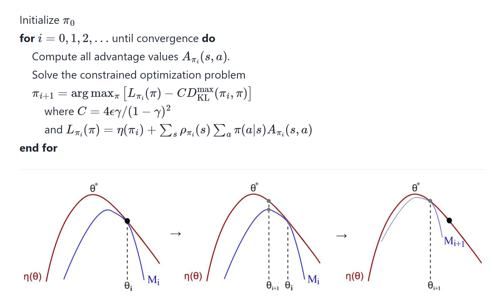
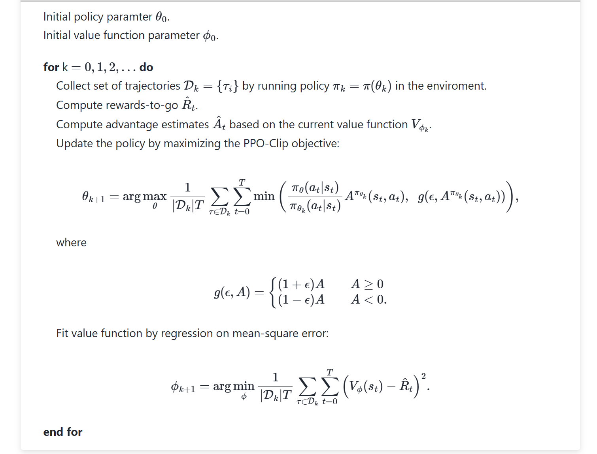

马尔可夫重度依赖
最近需要学习一些有关 RL 和 LLM reasoning 能力的知识，在这里零碎的记录一下。此前对 RL 也已经有相当的接触，参阅 COMP3270 笔记中 MDP 与 RL I-II 部分。P.S. 顺便祝我自己生日快乐！
MDP
source: 动手学强化学习 — 马尔可夫决策过程
notation reminder.
- 奖励函数 \(r(s,a)\)
- 状态转移函数 \(P(s'|s,a)\)，从 \(s\) 执行动作 \(a\) 到达 \(s'\) 的概率
- 基于策略 \(\pi\) 的状态价值函数 \(V^{\pi}(s)\)，从状态 \(s\) 出发遵循 \(\pi\) 获得的期望回报
- 动作价值函数 \(Q^\pi(s,a)\)，从状态 \(s\) 执行动作 \(a\)，遵循 \(\pi\) 获得的期望回报
- 贝尔曼期望方程：\(V^{\pi}\) 与 \(Q^{\pi}\) 的转移方程
这一部分的内容与 COMP3270 里的笔记有相当的重合之处，主要讨论的问题是求最优策略 \(\pi^*\)：
- model-based learning: 若奖励函数与状态转移函数已知
(或可计算)，直接使用贝尔曼期望方程进行多轮迭代 DP 直到目标收敛到最优值。
- 价值迭代求最优价值函数 (\(V^*\) 或 \(Q^*\) 均可)，再提取出最优策略 \(\pi^*\)
- 策略迭代直接求最优策略 \(\pi^*\)
- model-free learning: 核心思想是时序差分 (temporal difference)，无需事先知道奖励函数与状态转移函数，直接使用与环境交互的过程中采样到的数据来学习。如著名的 Q-learning 方法。
Policy Gradient
source: newfacade RL notes - 11. Policy Gradient
这个 source 侧重讲策略参数化 (paraterized policy)，即使用神经网络表征策略 \(\pi\)。把参数化的策略记为 \(\pi_\theta\)，神经网络的参数为 \(\theta\)。可以将神经网络的目标函数定义为 \(J(\theta)=E_{r\sim \pi}[R(\tau)]\)。
- \(E_{\tau\sim\pi}\)：从策略 \(\pi_\theta\) 中采样的轨迹 \(\tau\) 的期望
- \(R(\tau)\)：轨迹 \(\tau\) 积累的所有奖励/轨迹 \(\tau\) 的回报 (在这里我定义回报 \(=\) 总累计奖励)
- 显然，我们需要最大化 \(J(\theta)\)，采用梯度上升 \(\theta\leftarrow \theta*\nabla_\theta J(\theta)\)
策略梯度定理 The Policy Gradient Theorem 证明见上 source。注意 \(\nabla_{\theta}\log(\prod_{t=0}^H P(s_{t+1}|s_t,a_t))=0\)，因为状态转移函数与策略无关 (只与环境有关)，求导后为 \(0\)。 \[ \begin{aligned} \nabla_{\theta} J(\theta)&=E_{r\sim \pi_{\theta}}[\sum_{t=0}^H\nabla_{\theta}\log \pi_{\theta}(a_t|s_t)R(\tau)] \\ \text{estimate grad. } \nabla_{\theta}J(\theta)&\approx \hat{g}=\frac{1}{m}\sum_{i=1}^m \sum_{t=0}\nabla_{\theta}\log \pi_{\theta}(a_t^{(i)}|s_t^{(i)})R(\tau^{(i)}) \end{aligned} \] 直观的理解：我们的目的是最大化 \(J(\theta)\)，较高的回报 \(R(\tau)\) 将升高对应 (state, action) 组合的概率，否则将会降低其概率。但这会带来一个问题：一个 (state, action) 组合概率的升高应当只与它将要获得的奖励有关，与已经获得的奖励无关；而此处我们使用的是整条轨迹的回报，这会带来很多 noise，增加需要采样的轨迹数。
定义 Reward-to-go Policy Gradient 解决此问题 (具体见 source Don't Let the Past Distract You 一节)： \[ \nabla_{\theta} J(\theta)=E_{r\sim \pi_{\theta}}[\sum_{t=0}^H\nabla_{\theta}\log \pi_{\theta}(a_t|s_t)\sum_{t'=t}^TR(s_t',a_t',s_{t'+1})] \] Source 里的样例代码也写得很好，可以多加参考。
TRPO
sources:
TRPO (Trust Region Policy Optimization) 信任区域策略优化。该算法的意义更多在于其背后的理论，对于实际应用而言更推荐 PPO 而非 TRPO。
- 在该 setting 下，奖励函数是 \(r:S\to \mathbb{R}\)，获得的奖励仅与到达的状态有关。
- \(\eta(\pi)\) 表示策略 \(\pi\) 的期望回报，有 \(\eta(\pi)=\mathbb{E}_{s_0,a_0,...}[\sum_{t=0}^{\infty}\gamma^t r(s_t)]\)
- 优势函数 \(A_\pi(s,a)=Q_{\pi}(s,a)-V_\pi(s)\)，表示在状态 \(s\) 执行动作 \(a\) 相对于执行「平均」动作的优势值。
重要式子 1 之新旧策略期望回报差 (证明见 sources [2] & [3]，解释得很清楚)： \[ \eta(\tilde{\pi})=\eta(\pi)+\mathbb{E}_{s_0,a_0,...,\sim\tilde{\pi}}[\sum_{t=0}^\infty \gamma^tA_\pi(s_t,a_t)] \] 拆开期望项，对整个状态空间与动作空间求和： \[ \begin{aligned} \eta(\tilde{\pi})&=\eta(\pi)+\sum_{t=0}^\infty \sum_s P(s_t=s|\tilde{\pi})\sum_a \tilde{\pi}(a|s)\gamma^t A_\pi(s,a) \\ &= \eta(\pi)+\sum_s \sum_{t=0}^\infty \gamma^t P(s_t=s|\tilde{\pi})\sum_a \tilde{\pi}(a|s)A_\pi(s,a) \\ &= \eta(\pi) +\sum_s \rho_{\tilde{\pi}}(s) \sum_a\tilde{\pi}(a|s)A_\pi(s,a)\\ &\approx L_{\pi}(\tilde{\pi})\\ &=\eta(\pi)+\sum_s \rho_{\pi}(s) \sum_a\tilde{\pi}(a|s)A_\pi(s,a) \end{aligned} \] 这里 \(\rho_{\pi}(s)=\sum_{t=0}^\infty \gamma^t P(s_t=s|\pi)\)，被称为 discounted visitation frequencies。
最后一步我们使用 \(\rho_\pi\) 来近似 \(\rho_{\tilde{\pi}}\)，使得从旧策略到新策略的优化不依赖于新策略本身。这种近似成立也是因为新旧策略的参数很接近。相应的，使用 \(L_{\pi}(\tilde{\pi})\) 来表示从旧策略 \(\pi\) 开始优化，所得到新策略 \(\tilde{\pi}\) 的期望奖励 \(\eta(\tilde{\pi})\) 的局部近似值。
经过证明，\(L_\pi(\tilde{\pi})\) 与 \(\eta(\tilde{\pi})\) 在 \(\pi\) 处一阶近似：也就是说，能改善近似回报函数 \(L_\pi(\tilde{\pi})\) 的策略也能改善真回报函数 \(\eta(\tilde{\pi})\)。问题是应该采取多大的步长呢？
重要式子 2 之单调改善保证 (Monotonic Improvement Guarantee) (sources [1] & [3])：
这里省略了一系列证明，还是主要来看这个式子说明了什么。 \[ \begin{aligned} \eta(\tilde{\pi})&\geq L_\pi(\tilde{\pi})-C\cdot D_{KL}^{\max}(\pi,\tilde{\pi}) \\ \text{where } C&=\frac{4\epsilon y}{(1-\gamma)^2}, \\ \epsilon&=\max_{s,a}|A_{\pi}(s,a)|, \\ D_{KL}^{\max}(\pi,\tilde{\pi})&= \max_s D_{KL} (\pi(\cdot|s) ||\tilde{\pi}(\cdot|s)) \end{aligned} \] 它给出了 \(\eta(\tilde{\pi})\) 的一个下界，从而使策略单调不降的迭代更新成为可能：\(\eta(\pi_0)\leq \eta(\pi_1)\leq \eta(\pi_2)\leq...\)。证明：
- 令 \(M_i(\pi)=L_{\pi_i}(\pi)-CD_{KL}^{\max}(\pi_i,\pi)\)
- 根据式 (5) 有 \(\eta(\pi_{i+1})\geq M_i(\pi_{i+1})\)
- 又因为 \(D_{KL}^{\max}(\pi_i,\pi_i)=0,L_{\pi_i}(\pi_i)=\eta(\pi_i)\)，有 \(\eta(\pi_i)=M_i(\pi_i)\)
- 两式相减有 \(\eta(\pi_{i+1})-\eta(\pi_i)\geq M_i(\pi_{i+1})-M_i(\pi_i)\)
把 \(M_i\) 视为关于 \(\pi\) 的函数，在第 \(i\) 步，如果有新的策略 \(\pi_{i+1}\) 使得 \(M_i\) 最大，并且也使得 \(M_i(\pi_{i+1})-M_i(\pi_i)\geq 0\)，那么也一定有 \(\eta(\pi_{i+1})-\eta(\pi_i)\geq 0\)。至此，步长的问题通过这个最优化问题的建立得到了解决。
TRPO 的理论算法构建如下；这个迭代的框架能保证在每次更新时，策略一定不会变得比之前更坏 (解决了学习率选取的问题，但还是有可能陷入局部最优解。优势函数需要是可计算的)。

PPO
sources:
- [1] newfacade RL notes - 11. Policy Gradient
- [2] newfacade RL notes - 15. PPO
- [3] 热血厨师长 - 狗都能看懂的 PPO 算法详解
Policy gradient 的优势函数定义 (见 source [1] Appendix C，策略梯度其实是一系列函数)： \[ \nabla_{\theta}J(\theta)=\mathbb{E}_{(s_t,a_t)\sim \pi_{\theta}}[A_\theta(s_t,a_t) \nabla_\theta\log \pi_{\theta}(a_t|s_t)] \] 使用重要性采样 (importance sampling) (见 source [3]，解释很到位) 把 policy gradient 变换成以下形式，其中 \(\pi_{\theta}\) 是待更新的策略，\(\pi_{\theta'}\) 是收集样本的策略 (即旧策略。这里确实有一点 off policy 的意思，但 PPO 整体是 on policy 的)： \[ \begin{aligned} \nabla_{\theta}J(\theta)&\approx\mathbb{E}_{(s_t,a_t)\sim \pi_{\theta'}}[\frac{\pi_{\theta}(a_t|s_t)}{\pi_{\theta'}(a_t|s_t)}A_\theta(s_t,a_t) \nabla_\theta\log \pi_{\theta}(a_t|s_t)] \\ &= \mathbb{E}_{(s_t,a_t)\sim \pi_{\theta'}}[\frac{\nabla\pi_{\theta}(a_t|s_t)}{\pi_{\theta'}(a_t|s_t)}A_{\theta'}(s_t,a_t)] \\ \end{aligned} \] 反推出目标函数： \[ J(\theta)=\mathbb{E}_{(s_t,a_t)\sim \pi_{\theta'}}[\frac{\pi_{\theta}(a_t|s_t)}{\pi_{\theta'}(a_t|s_t)}A_{\theta'}(s_t,a_t)] \] (此处见 source [2]，还有 \(\theta-r\) 折线图辅助理解) 我们定义 ratio function \(r_t(\theta):=\pi_{\theta}(a_t|s_t)/\pi_{\theta'}(a_t|s_t)\)，它能够表示 \(\pi_\theta\) 与 \(\pi_{\theta'}\) 的散度。若 \(r_t(\theta)>1\)，\((a_t,s_t)\) 更可能出现在 \(\pi_\theta\) 中；若 \(r_t(\theta)<1\)，\((a_t,s_t)\) 则更容易出现在 \(\pi_{\theta'}\) 中。
为了不让 \(\pi_{\theta}\) 偏离 \(\pi_{\theta'}\) 过远 (不让 \(r\) 偏离 \(1\) 过远)，我们对目标函数进行剪裁 (clipped objective)，这样当 \(r\) 偏离 \(1\) 过远时能防止 \(\pi_{\theta}\) 被更新得太过剧烈。 \[ \begin{aligned} L(s,a,\theta_k,\theta)&=\min(\frac{\pi_{\theta}(a|s)}{\pi_{\theta_k}(a|s)}A^{\pi_{\theta_k}}(s,a),\text{clip}(\frac{\pi_{\theta}(a|s)}{\pi_{\theta_k}(a|s)},1-\epsilon,1+\epsilon)A^{\pi_{\theta_k}}(s,a))\\ \theta_{k+1}&=\arg \max_{\theta} \mathbb{E}_{s,a\sim \pi_{\theta_k}}[L(s,a,\theta_k,\theta)] \end{aligned} \] 下面给出 PPO-clip 算法的伪代码：

GAE
sources:
- 万理的探求者 - GAE 广义优势估计，主要讲 GAE 的 intuition，很不错
- 阿正的梦工坊 - 深入解析 GAE
计算优势函数 \(A(s,a)\) 时往往会面临两大问题：
- Monte Carlo estimation 的高方差 (high variance)：\(A_t=R_t-V(s_t)\)，其中 \(R_t\) 是根据完整轨迹求出的真实回报 \(R_t=r_t+\gamma r_{t+1}+\gamma^2 r_{t+2}+...\)。MC 估计是对优势函数的无偏估计，但由于样本数量有限，求出的优势函数往往方差较大，使得训练不稳定。
- one-step TD learning 的高偏差 (high bias)：\(A_t=r_t+\gamma V(s_{t+1})-V(s_t)\)，仅依赖于即时奖励和下一状态的估计价值函数，因此可能会出现较大偏差，尤其是在训练初期价值函数不准确的情况下。(问题：使用 n-step TD learning 又如何？确实有这种方法，被称为 \(\lambda\)-return 算法)
GAE (Generalized Advantage Estimation) 是一种在偏差与方差之间权衡的优势函数估计方法。它的核心思想在于把当前时间步 \(t\) 的优势函数 \(A_t\) 拆分成即时误差 (\(\delta_t\), TD Residuals) 与未来累计误差的加权和。通过引入新参数 \(\lambda\) 控制 GAE 对长期误差的关注度。 \[ \begin{aligned} \text{TD Residuals. } \delta_t &= r_t+\gamma V(s_{t+1})-V(s_t) \\ A(s_t,a_t)&\approx A_t^{\text{GAE}}=\sum_{l=0}^\infty (\gamma\lambda)^l \delta_{t+l} \end{aligned} \] GAE 的递归形式如下，更符合我们在上文提到的「拆分」思想： \[ A_t^{\text{GAE}}=\delta_t+(\gamma\lambda)\cdot A_{t+1}^{\text{GAE}} \] 当 \(\lambda=1\) 时，GAE 退化为 MC 估计，\(\lambda=0\) 退化为 TD 估计。
Actor-Critic Methods
source: newfacade RL notes - 12. Actor-Critic
让我想起了 GAN，本质上是将 value-based method 引入 policy-based method 来减少策略梯度的方差。最后我们将会得到两个 function approximations：
- actor：控制 agent 如何做出行动的策略 \(\pi_{\theta}(s)\)
- critic：评估 agent 所做行动并协助 actor 策略更新的价值函数 \(\hat{q_w}(s,a)\)
很自然，可以直接采用状态价值函数 \(V(s)\) 或动作价值函数 \(Q(s,a)\) 作为 critic。
critic 的目标函数通常是 MSE loss，使其尽可能接近真实的价值函数。此外，critic 也可以采用 clipped objective 进行剪裁，使得学习过程更稳定。 \[ L_{\text{value}}=\max[(V_{\theta_t}-V_{\text{target}})^2,(\text{clip}(V_{\theta_t},V_{\theta_{t-1}}-\epsilon,V_{\theta_{t-1}}+\epsilon)-V_{\text{target}})^2] \] 这里的 \(V_{\text{target}}=A_t+V(s_t)\)，其中 \(A_t\) 是以 actor 收集的样本通过 GAE 计算而来，\(V(s_t)\) 是 critic 当前的估计。在下一轮中，actor 在计算策略梯度时又采取 critic 计算的价值函数 \(V(s_t)\)。
Reference
- 动手学强化学习 — 马尔可夫决策过程
- newfacade RL notes - 11. Policy Gradient
- newfacade RL notes - 14. TRPO
- Ton10 - 论文笔记之 TRPO
- 天津包子馅儿 - 强化学习第七讲 TRPO
- newfacade RL notes - 11. Policy Gradient
- newfacade RL notes - 15. PPO
- 热血厨师长 - 狗都能看懂的 PPO 算法详解
- 万理的探求者 - GAE 广义优势估计
- 阿正的梦工坊 - 深入解析 GAE
- newfacade RL notes - 12. Actor-Critic